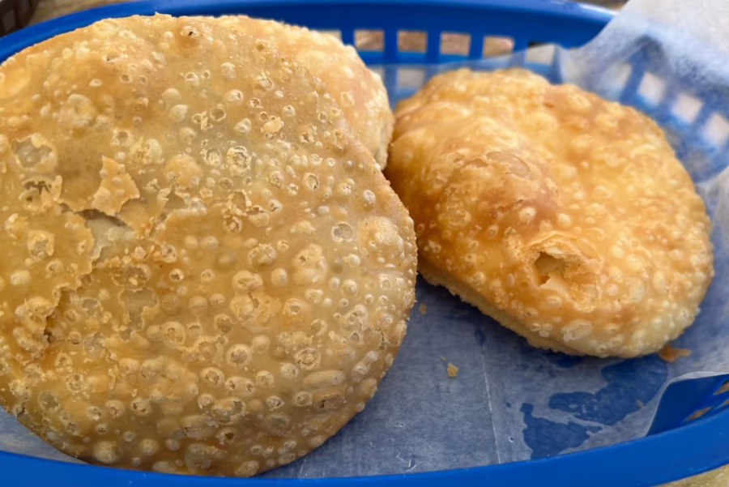
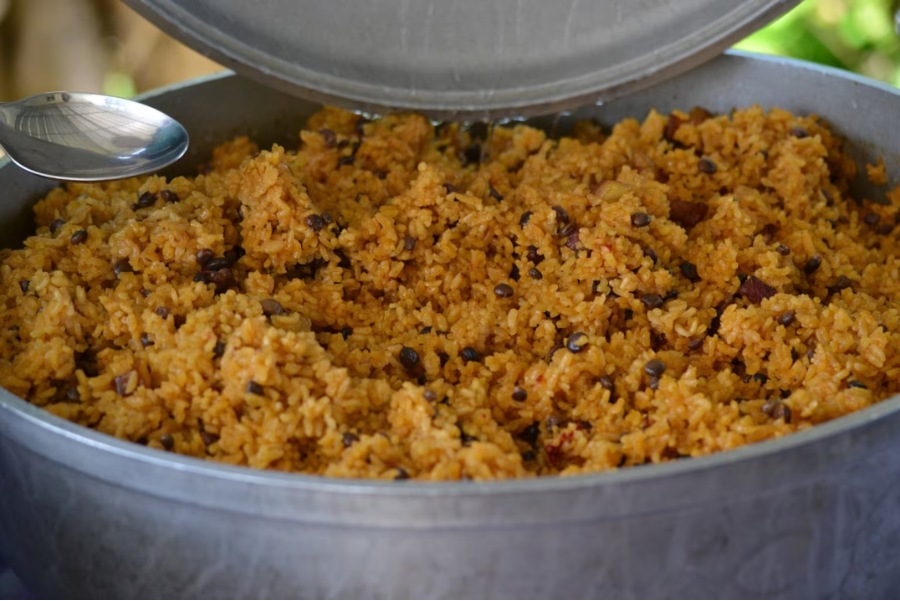
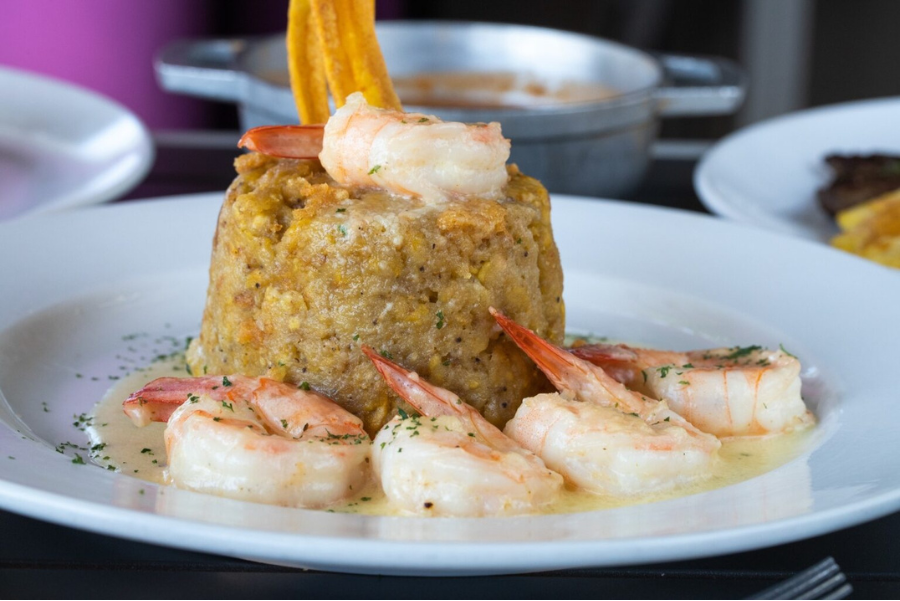
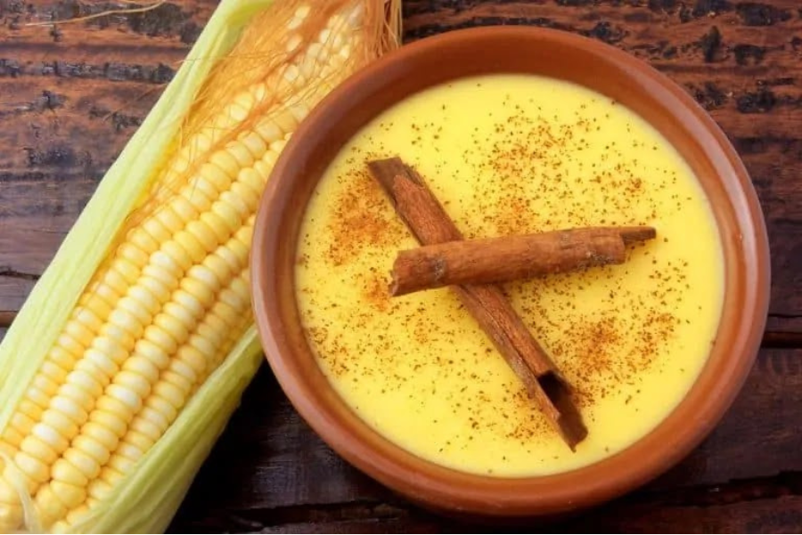
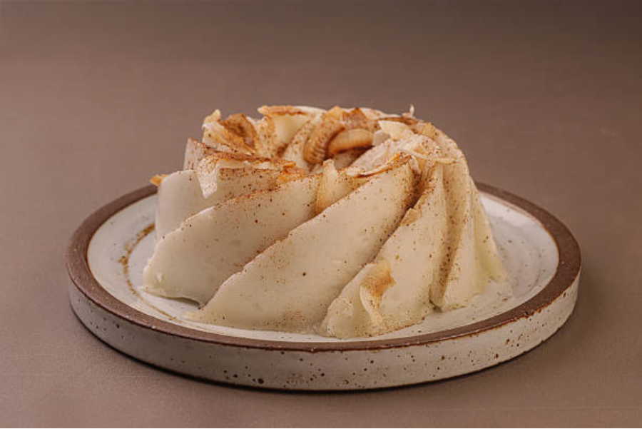
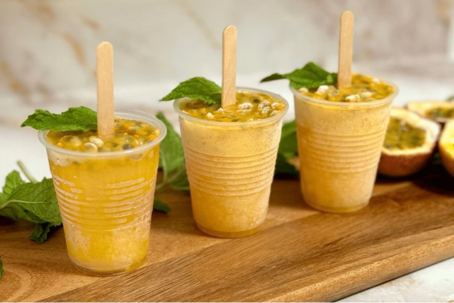

Piña Colada
Culinária de Porto Rico

HISTÓRIA
A culinária de Porto Rico resulta da mistura de diferentes influências históricas e culturais. Antes da chegada europeia, a ilha era habitada pelos Taíno, povo que chamava o território de Borikén e baseava sua alimentação em ingredientes locais como mandioca, batata-doce, abóbora, feijão, pimenta e frutas tropicais, além de pescar e caçar pequenos animais. Com a chegada dos espanhóis em 1493, durante a expedição de Christopher Columbus, grande parte da população indígena foi dizimada, e a cultura espanhola passou a dominar vários aspectos da vida na ilha. Posteriormente, escravizados africanos trouxeram novos ingredientes e técnicas culinárias, e, no século XX, a influência dos Estados Unidos também contribuiu para a formação da gastronomia local. Dessa mistura surgiu a chamada cocina criolla, que caracteriza a culinária porto-riquenha atual. Entre os ingredientes mais comuns estão arroz, frango, peixe, frutos do mar, plátanos (banana-da-terra), mandioca, inhame, feijão, abóbora, coco e frutas tropicais, além de ervas como coentro, culantro e orégano. Dois elementos importantes no preparo são o adobo, um tempero à base de alho, limão ou vinagre, e o sofrito, mistura aromática usada como base de muitos pratos. Em geral, a culinária porto-riquenha não é muito picante e costuma combinar sabores doces e ácidos. Saiba mais
SALGADOS

Arepas são um pão frito feito com farinha de trigo, frequentemente servido no café da manhã. Você as encontrará à venda nas ruas para serem consumidas com um café quente e forte. Podem ser doces, salgadas, simples ou recheadas com ingredientes como queijo.
Arepas
Ingredientes:
- 8 xícaras de farinha de trigo
- 4 colheres de sopa de fermento em pó
- 1 colher de sopa cheia de sal
- 10 oz de banha, cortada em cubos
- 2 xícaras e meia de água em temperatura ambiente
- óleo vegetal
Preparo:
Em uma tigela grande, misture a farinha, o fermento e o sal. Adicione a banha e incorpore com os dedos até obter uma textura parecida com areia, com pequenos pedaços na massa. Acrescente a água aos poucos, sovando até formar uma massa que se junte em uma bola levemente elástica. Cubra a massa com um pano úmido e morno e deixe descansar por 1 a 2 horas. Depois, modele bolinhas do tamanho de duas bolas de golfe e abra-as em discos com cerca de 0,6 cm de espessura sobre uma superfície enfarinhada. Aqueça cerca de 1,2 cm de óleo vegetal em uma frigideira e frite de 1 a 3 arepas por vez. Cozinhe por cerca de 30 a 45 segundos de cada lado, virando até ficarem douradas. Repita o processo em novos lotes e sirva simples ou acompanhadas de arroz, feijão, frango, ovos ou outros recheios.

O arroz com gandules é frequentemente chamado de prato nacional de Porto Rico. É feito com arroz cozido com ervilhas-de-pombo. O feijão-guandu — ou gandules — é, na verdade, um pequeno feijão com sabor de noz, e pode ser fresco, congelado ou em lata.
Arroz com Gandules
Ingredientes:
-
2 xícaras de arroz basmati integral
4 xícaras water
4 colheres de sopa de sofrito
1 colher de sopa canola oil
1 pitada salt
3 xícaras de gandules (ervilhas-de-pombo)
10 maços de coentro
1/2 xícara, cortadas onion
Preparo:
-
1. Descongele o refogado.
2. Em uma frigideira, aqueça o óleo em fogo médio-alto e adicione cebola e coentro.
3. Quando a cebola estiver macia, adicione o refogado descongelado e deixe aquecer bem.
4. Lave o grão-de-bico e adicione-o ao refogado, deixando aquecer bem.
5. Adicione 4 xícaras de água, o arroz e sal a gosto. Misture bem.
6. Assim que a mistura ferver, cozinhe o arroz em fogo baixo por cerca de 35 minutos, ou até que a água seja absorvida. Bom apetite!

O mofongo é um prato básico da gastronomia local, cujo ingrediente principal são as bananas-da-terra verdes. Geralmente é servido em formato de cúpula ou bola e pode ser um acompanhamento ou prato principal.
Arepas
Ingredientes:
- Farinha de milho
- Água
- Sal
- Pode levar queijo ou carne
Preparo:
BEBIDAS
1 / 3

2 / 3

Pirroto
Destilado de cana-de-açúcar de alto teor alcoólico feito fora das casas formais de rum; tem muitas variações
3 / 3

Coquito
Feito com rum, leite de coco, leite condensado, creme de coco, baunilha e canela
SOBREMESAS

Majarete é uma sobremesa feita principalmente com coco, leite de coco, açúcar e algum espessante como farinha de arroz ou amido. Possui textura cremosa e firme, como um pudim, e costuma ser aromatizado com canela ou baunilha. É servido frio e frequentemente decorado com canela em pó.
Arepas
Ingredientes:
- Farinha de milho
- Água
- Sal
- Pode levar queijo ou carne
Preparo:

Tembleque é um doce típico preparado com leite de coco, açúcar e amido de milho. Seu nome vem do verbo espanhol temblar (“tremer”), pois a sobremesa balança levemente quando servida. Geralmente é moldado em forma circular e polvilhado com canela antes de ser consumido.
Arepas
Ingredientes:
- Farinha de milho
- Água
- Sal
- Pode levar queijo ou carne
Preparo:

Límber é uma sobremesa gelada muito popular, semelhante a um picolé caseiro. É comum em dias quentes e pode ser encontrado em diversos sabores, como coco, tamarindo ou maracujá. O nome é associado ao aviador Charles Lindbergh, cuja visita a Porto Rico teria inspirado a denominação do doce.
Arepas
Ingredientes:
- Farinha de milho
- Água
- Sal
- Pode levar queijo ou carne
Preparo: